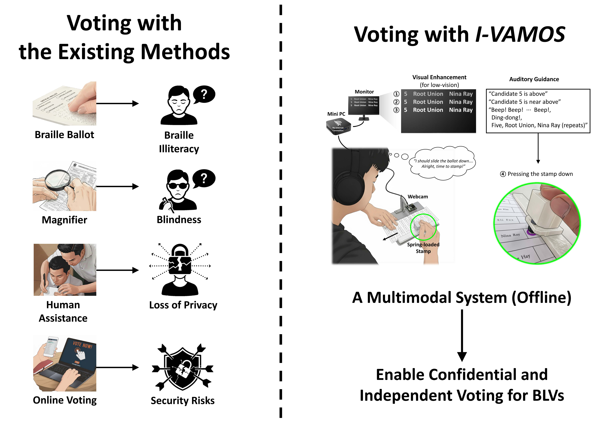
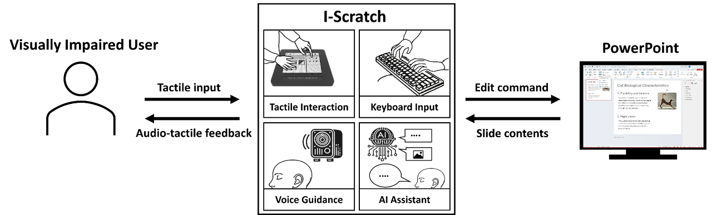
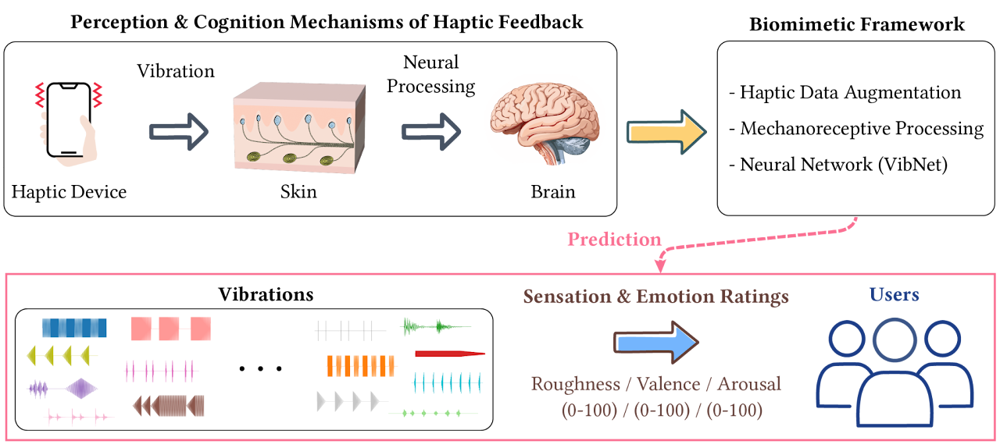
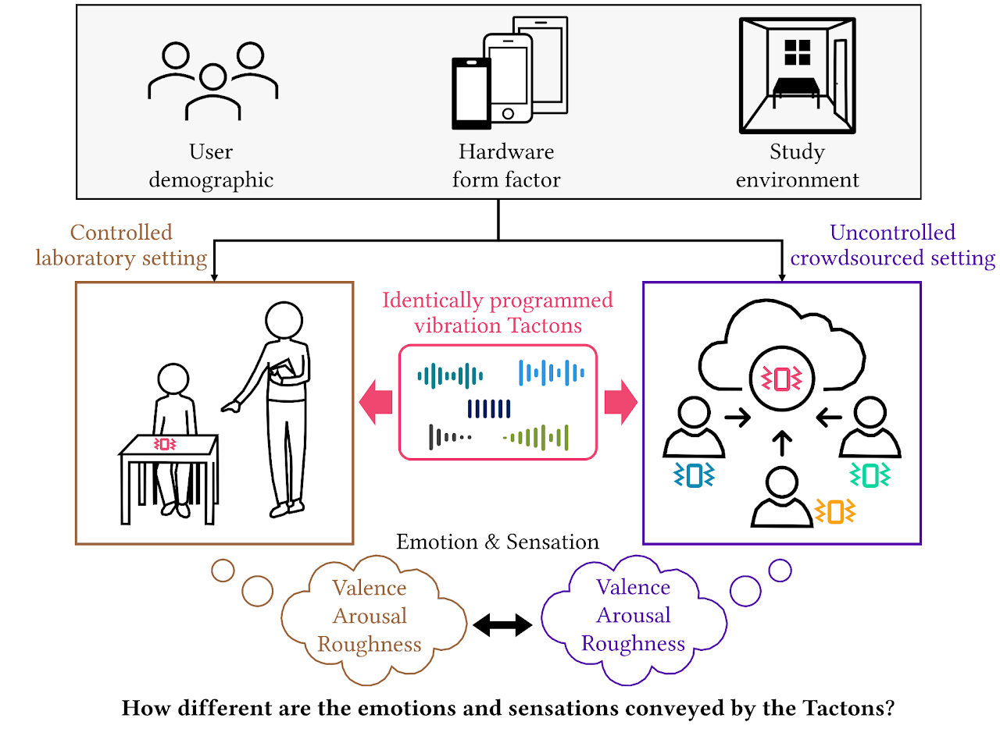
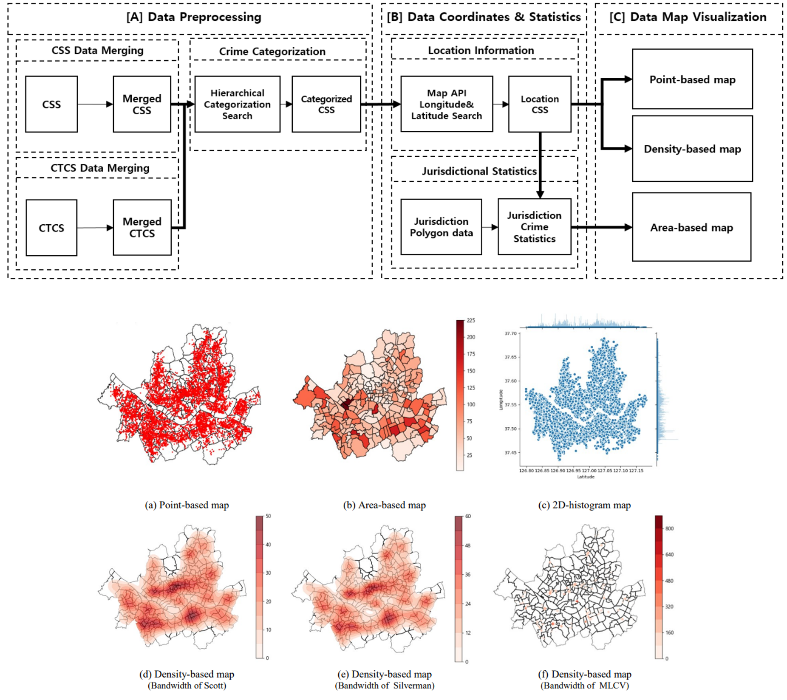

Gyeongdeok Kim
Home
Publications
Awards
Mentoring
Papers
2026

I-VAMOS: Independent Voting with an Accessible Multimodal Offline System for Visually Impaired Users
Gyeongdeok Kim
, Chungman Lim, Gyungmin Jin, Gunhyuk Park
Proceedings of the 2026 CHI Conference on Human Factors in Computing Systems (CHI '26)
Paper
2025

I-Scratch: Independent Slide Creation With Auditory Comment and Haptic Interface for the Blind and Visually Impaired
Gyeongdeok Kim
, Chungman Lim, Gunhyuk Park
Proceedings of the 2025 CHI Conference on Human Factors in Computing Systems (CHI '25)
Paper

Can a Machine Feel Vibrations?: Predicting Roughness and Emotional Responses to Vibration Tactons via a Neural Network
Chungman Lim,
Gyeongdeok Kim
, Su-Yeon Kang, Hasti Seifi, Gunhyuk Park
IEEE Transactions on Haptics
Paper |
🏆 Best Paper Award

Emotional and sensory ratings of vibration Tactons in the lab and crowdsourced settings
Chungman Lim,
Gyeongdeok Kim
, Yatiraj Shetty, Troy McDaniel, Hasti Seifi, Gunhyuk Park
International Journal of Human-Computer Studies
Paper
2020

Bandwidth Selection of Kernel Density Estimation for GIS-based Crime Occurrence Map Visualization
Yongjin Kim,
Gyeongdeok Kim
, Yongtae Lee, Kwangho Jang
IEEE International Conference on ICT Convergence (ICTC), 2020
Paper
Patents
Force and complex vibration rendering system using force feedback device and wideband resonance actuator and method for providing force and complex vibration using the system
Gunhyuk Park,
Gyeongdeok Kim
, Donghyeon Kim, Bongsoo Kim, Sungho Kim
Korea Patent KR102885148B1 (Granted) · U.S. Patent Application US20240108977A1 (Published Apr. 4, 2024; Pending)